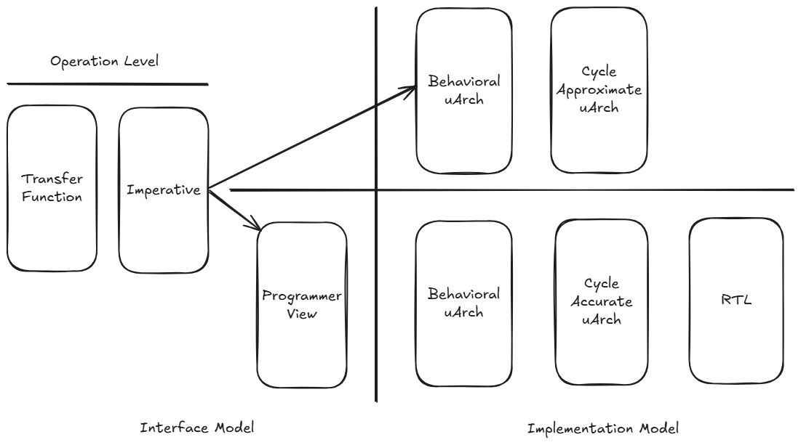

The abstraction gap and model fragmentation are two key drivers of hardware design-flow complexity. The abstraction difference between a paper design specification and the register-transfer-level (RTL) model that implements that specification is enormous, and only increasing as designs become larger and more complex. It’s natural to focus attention on the RTL model, since that is required to get to implementation. However, RTL models are also time-consuming to produce and execute slowly. This delays how early software teams obtain access to a representation of the design, and limits the platforms on which they can work to fast hardware emulation or prototyping environments.
Creating more models at different levels of abstraction seems a good approach on the surface. Unfortunately, the languages and techniques used to create these more-abstract models are fragmented, leading to each model effectively being an independent effort. Integrating these models into existing environments – for example, integrating a C++ transaction-level model into a SystemVerilog/UVM testbench – is also typically labor-intensive.
Core challenges:
Approaches:
All of these innovations primarily come from a hardware-design perspective, and focus on enabling hardware-design flows. That, in itself, is a challenge given the relative sizes of the hardware- and software-engineering ecosystems. While it’s difficult to find accurate detailed data, US Bureau of Labor Statistics reports a labor-market size of 76,800 for hardware engineers vs a labor-market size of 1,534,790 for software engineers (inclusive of all disciplines in both cases). Given are from the perspective have been initiated from a hardware design perspective, precisely because of unique semantics required to accurately capture the details of hardware design and verification models. This, in itself, is a core challenge. Since the collective challenge is the system, crossover is a key measure of success. Specifically, how readily can a software discipline make use of an artifact created by a hardware discipline and vice versa. Motivating more than 95% percent of the combined hardware/software ecosystem to adopt an environment tailored to the needs of the minority seems unlikely.
Zuspec ^[https://zuspec.github.io/] targets this success criteria by adopting Python, an existing software language ecosystem, as its starting point and building hardware semantics into that ecosystem. The result is a platform that offers high productivity for hardware engineering, as well as an increased ability to share artifacts with software disciplines.
Many factors are involved in selecting a language for any purpose: key language features, tool ecosystem, relevant libraries, as well as the community around the language. Applying a language to the semantics of other domains raises another: flexibility of the language.
Python is a popular language overall, holding the top spot in many rankings for several consecutive years, and being ranked highly for many years before that. Language popularity may not seem relevant compared to the technical features of a language. Not only it is relevant, popularity has a direct bearing on language technical features. TIOBE ^[https://www.tiobe.com/tiobe-index/], for example, measures language rank in terms of searches via a range of internet search engines ^[https://en.wikipedia.org/wiki/TIOBE_index]. This is, of course, a rough measure a the size of a language’s community. Larger communities produce more ideas for using a language and, thus, a a larger library ecosystem. Larger communities more-rapidly produce and refine adjacent technologies, such as code development and package management tools.
Popularity often builds upon itself, and there is evidence that AI is acting as a driver of Python’s popularity. Specifically, AI assistants are often reported to be more effective with Python than with other languages ^[https://www.perplexity.ai/page/ai-generates-up-to-30-of-micro-Iy6zscIfSy6miYtIqvrsMA]. This has the effect of drawing more developers to Python, which increases the available code in Python, which more-rapidly increases the quality of results with Python.
But, language popularity is only relevant for the set of languages that can be used to capture relevant domain semantics. Fortunately, Python measures up very well here again.
There are strong technical arguments for the Python language as well. As a dynamic language, Python provides excellent facilities for introspecting and manipulating a Python description.
import zuspec.dataclasses as zdc
@zdc.dataclass
class SendPacket(zdc.Struct):
sz : zdc.Bit[8] = zdc.rand()
@zdc.constraint
def valid_sz(self):
self.sz in [1, 2, 4, 8, 16]
Python decorators can be used to annotate elements of the description,
identifying specific semantics to be applied to an element or attaching
special processing instructions. For example, the constraint decorator
above marks the body of the valid_sz method as having constraint
semantics.
Python also allows inheritance relationships to be inspected at any point in time. The base type controls capabilities and restrictions of the derived type.
While Python can be used as a purely dynamically-typed language, it
also provides the ability to associate type “hints” with variables.
The sz field in the example above specifies that it is an unsigned
8-bit field. This enables the modeler to control how data in the
model will be represented in the implementation.
Finally, Python supports AST introspection and transformation. This capability allows tools to access the raw AST for code, such as the constraint method above, without needing to use tricks like operator overloading.
Statically-typed languages often provide some introspection facilities that are available during the compilation phase. In contrast, Python allows these facilities to be applied to a Python description at any point in time, providing much more flexibility in processing flows. Effectively, Python allows libraries like Zuspec to act as a compiler within the Python interpreter.
Python also offers a strong set of system-programming features. Combined with Python’s dynamic language features, these dramatically simplify the process of integrating external tools and systems.
Python also specifies a package specification and provides tools for producing, discovering, and consuming packages.
Together, these capabilities make Python a very compelling platform for developing, verifying, and publishing hardware models.
All languages are a combination of syntax and semantics. Syntax
governs the lexical aspects of a language: the keywords, operators,
and legal ways of arranging them. Semantics governs the meanings of
those statements – for example, whether a = b changes the value
of the a variable, changes the a variable to reference
the b variable, or something entirely different. Zuspec proposes
a way to adopt full Python syntax, while identifying key regions
in which different semantics apply to this syntax. These new semantics
are always more restrictive than native Python semantics, allowing
existing code checkers (eg mypy) to work unmodified.
Zuspec divides a Python description into two core region kinds:
In order to implement a counter in hardware, we need to be able to capture some unique semantics:
count fieldZuspec identifies regions with these semantics with a combination of
Python decorators and base classes. Let’s look at the same counter
example expressed in hardware with Zuspec.
import zuspec.dataclasses as zdc
@zdc.dataclass
class Counter(zdc.Component):
clock : zdc.Bit = zdc.input()
reset : zdc.Bit = zdc.input()
count : zdc.Bit[32] = zdc.output()
@zdc.sync(clock=lambda s:s.clock, reset=lambda s:s.reset)
def inc(self):
if self.reset:
self.count = 0
else:
self.count += 1
The Counter example above illustrates these two regions. By default,
pure Python semantics are used. This means that the import statement
at the top uses pure Python semantics.
The Counter class inherits from the Zuspec Component class, which
designates it as a class with specific capabilities. The inc method
is decorated with the sync decorator. This marks it as a method that
is automatically evaluated on the active edge of the specified
clock or reset signals, where the value of variables is deferred.
It also marks it as a method that may not be invoked directly.
A class domain with special semantics is a model of implementation,
and cannot be used directly. Instead, a Transformer class
must first be used to create an implementation. The implementation
could be pure-Python, Verilog, or something entirely different like
documentation.
import asyncio
from zuspec.be.py import ComponentFactory
import zuspec.dataclasses as zdc
@zdc.dataclass
class CountTB(zdc.Component):
clkrst : zdc.ClockReset = zdc.field(init={period=10})
counter : Counter = zdc.field(
bind=lambda s:{
s.counter.clock : s.clkrst.clock,
s.counter.reset : s.clkrst.reset
})
def test_smoke(self):
tb = ComponentFactory(CountTB)
asyncio.run(tb.clkrst.do_reset(count=10))
assert tb.counter.count == 0
asyncio.run(tb.clkrst.wait(count=10))
assert tb.counter.count == 10
The example above shows a small testbench around the Count
component with a simple Pytest unit test. The type transformer
creates a Python object that is used to dynamically evaluate
the model. While the interface is Python, the implementation
may not be Python. For example, the factory may transform the
model to Verilog and create a Verilator ^[https://www.veripool.org/verilator/]
simulator executable that evaluates the model much faster than
a pure-Python implementation, while still exposing a Python
interface to the signals.
module Counter(
input clock,
input reset,
output reg[31:0] count);
always @(posedge clock or posedge reset) begin
if (reset) begin
count <= {32{1'b0}};
end else begin
count <= count + 1;
end
end
endmodule
Another factory might transform the model to the synthesizable Verilog shown above to be used as input to existing synthesis or simulation flows.

Zuspec targets the taxonomy of models shown in the figure above. Interface models focus on capturing how the system view of the component. For example, interacting with the device may be at the Programmer View (PV) level, using memory-mapped registers. Implementation models focus on the device internals, implementing the operations initiated by the interface model.
A transfer-function model represents the system impact of device operations. Transfer-function models are high level, and are useful for performing statistical analysis of the system impact of a device. For example, the transfer-function model of a DMA copy operation is shown below.
import zuspec.dataclasses as zdc
@zdc.dataclass
class Dma(zdc.Component):
channels : ChannelR = dc.pool(count=16)
@zdc.dataclass
class Mem2Mem(zdc.Action[Dma]):
dat_i : MemB = dc.input()
dat_o : MemB = dc.output()
chan : ChannelR = dc.lock()
@zdc.constraint
def _mem_c(self):
self.dat_i.sz == self.dat_o.sz
The DMA mem-copy model above captures key aspects of the operation:
import zuspec.dataclasses as zdc
@zdc.dataclass
class DmaBehavioral(zdc.Component):
regs : DmaRegs = zdc.field()
@zdc.process
async def _process_requests(self):
while True:
# Wait for an active channel
active : bool = False
while not active:
for i in range(16):
active |= regs.channels[i].csr.read().en
target_c = self._pick_channel()
channel = self.regs.channels[i]
# Carry out memory transfer for target channel
# ...
Unique technical aspects
For any of these that require
The abstraction gap between synthesiable Verilog RTL and the resulting gates on a silicon wafer is vast. However, increased complexity in digital hardware designs provides a compelling reason to create even more-abstract models.
Creating more models and raising the modeling abstraction level is genearlly beneficial. Unfortunately, the tools, languages, and techniques used for these different models are fragmented, leading to disconnected models, redundant work, and increased risk of bugs. In addition, disconnected models often limit the supported types of analysis. EDA flows are complex, and the required flow-management scripts become quite complex.
Zuspec proposes a Pythonic multi-abstraction modeling framework that covers
RTL
Hardware and firmware
Languages composted of syntax and semantics. Syntax is the way that characters are arranged. Semantics is
different models are